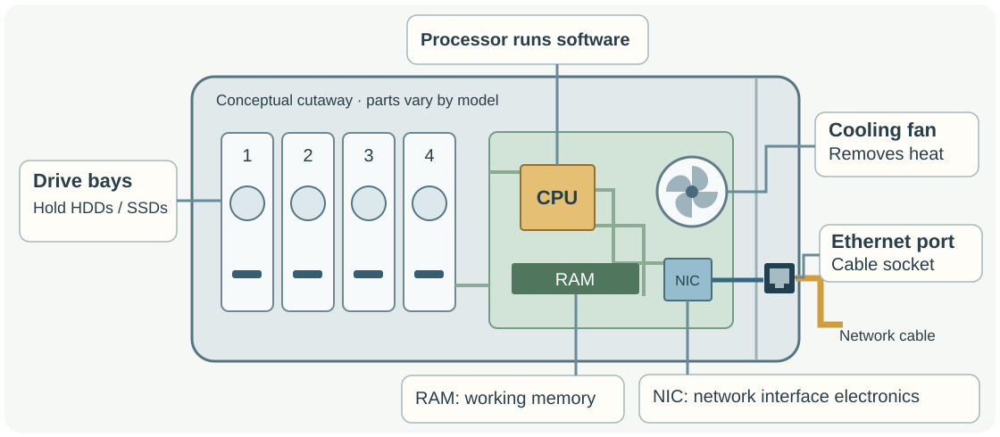
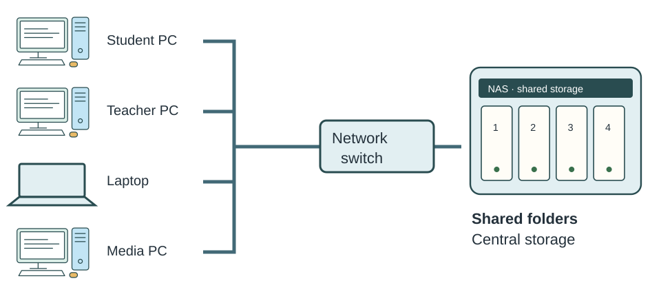
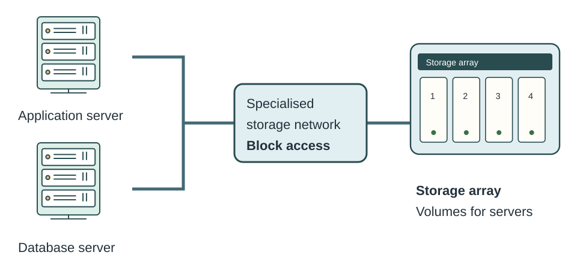

01 · RAID and NAS
Learning goals
Learn how several drives can work together, then choose storage that fits a user’s needs.
Why RAID?
Explain the trade-offs between speed, usable space, and surviving a drive failure.
How does it work?
Understand striping, mirroring, parity, and RAID 0, 1, 5, 6 and 10.
How is storage shared?
Explain NAS, its relationship with RAID, and the basic difference from SAN.
Which arrangement fits?
Calculate usable capacity and justify a storage choice.
02 · RAID and NAS
Why use more than one drive?
A business keeps all its important files on one hard drive. What happens if that drive fails?
One drive
All business files
→All business files
✕ Drive fails
→Files unavailable
Work stops while recovery is attempted.
Work stops while recovery is attempted.
RAID means Redundant Array of Independent Disks: drives arranged to work as one storage system. Depending on the level, using several drives can improve performance, provide more usable space, or keep files available after a drive failure.
03 · RAID and NAS
The RAID trade-off
Performance
How quickly the array reads and writes data. Several drives may work at the same time.
Usable capacity
How much space is available for your files after space used for extra copies or parity.
Fault tolerance
Whether the system can keep working after a supported drive failure.
Availability is whether users can access the service when they need it. Fault tolerance can improve availability, but drive redundancy cannot prevent every outage.
Teaching prompt
Ask which priority matters most for temporary video work, then for important shared files.
04 · RAID and NAS
Raw capacity and usable capacity
Drive 1● Healthy2 TB
Drive 2● Healthy2 TB
Drive 3● Healthy2 TB
Drive 4● Healthy2 TB
4 × 2 TB = 8 TB raw
Raw capacity
The total physical storage: add all drive capacities together.
Usable capacity
The space left for files after mirroring or parity overhead. It depends on the RAID level.
For our calculations, use equal-size drives and ignore formatting and system overhead. Later we will compare the usable space from this same 8 TB of drives.
05 · RAID and NAS
Striping: spread the pieces
A file is split into blocks. A1 to A6 below are six pieces of the same file. Drives can read or write different pieces in parallel, which can improve performance.
Healthy: all six pieces are present
Drive 1● HealthyA1A4
Drive 2● HealthyA2A5
Drive 3● HealthyA3A6
Drive 2 fails: two pieces are missing
Drive 1● HealthyA1A4
Drive 2✕ Failed? missing? missing
Drive 3● HealthyA3A6
Teaching prompt
Before showing the failed drive, ask whether the remaining pieces are enough to recreate the whole file.
06 · RAID and NAS
Mirroring: keep another copy
Both drives hold the same data. A, B and C are stored twice. These copies allow the array to keep working when one drive fails.
Healthy: two copies
Drive 1● HealthyABC
Drive 2● HealthyABC
Drive 1 fails: Drive 2 still has A, B and C
Drive 1✕ Failed? missing? missing? missing
Drive 2● HealthyABC
The extra copy uses space: two 2 TB drives in a simple mirror give 2 TB usable, not 4 TB.
07 · RAID and NAS
Parity: calculated recovery information
Data A
+Data B
→Calculate parity
Not a full copy
Parity is information calculated from a group of data blocks. It is smaller than keeping a second copy of every block.
Recover one missing part
If one block is lost, the remaining blocks and their parity can be used to work out the missing value.
RAID 5 keeps one parity block for each stripe (a row of blocks spread across the drives). First, let’s see the idea with just two data bits.
08 · RAID and NAS
Work out a missing value
XOR compares two bits: the same bits give 0; different bits give 1. That is all the XOR detail we need here.
1 · Calculate the parity
Data A
1XORData B
0=Parity
1
1XORData B
0=Parity
1
1 XOR 0 = 1. Store the parity as well as the data.
2 · Data A is missing
Data A
?XORData B
0=Parity
1
?XORData B
0=Parity
1
Which bit, combined with 0, would give the stored parity of 1?
3 · Reconstruct Data A
Equivalently: Data B XOR Parity = Data A. Here, 0 XOR 1 = 1.
4 · The same idea with four bits
Data A: 1010 Data B: 0110 Parity: 1100 Recover A: 0110 XOR 1100 = 1010
Compare one column at a time. This reconstructs the missing block; it does not need a complete second copy of A.
Teaching prompt
Pause on stage 2 and ask students to predict the missing bit before revealing it.
09 · RAID and NAS
Spread the parity across drives
Drive 1● HealthyA1B1P-C
Drive 2● HealthyA2P-BC1
Drive 3● HealthyP-AB2C2
Each row is a different stripe. P-A protects the A blocks, P-B protects the B blocks, and P-C protects the C blocks. The parity position moves between drives.
- RAID 5 distributes parity across the array; it does not reserve one physical drive only for parity.
- This spreads parity work instead of concentrating it on one dedicated parity drive.
- Across the whole array, parity takes one drive’s worth of space.
10 · RAID and NAS
From drive failure to rebuild
- HealthyAll data and redundancy are present.
- FailureOne drive stops working.
- DegradedA supported RAID arrangement serves data using the remaining copy or parity.
- ReplaceA suitable replacement drive is installed.
- RebuildThe system recreates the missing contents on the replacement.
- Healthy againThe rebuild finishes and redundancy is restored.
A rebuild takes time and uses drive activity. User access may be slower. Until it finishes, the array has less protection against another failure.
11 · RAID and NAS
RAID levels: the roadmap
| RAID | Technique | Min drives | Fault tolerance |
|---|---|---|---|
| 0 | Striping | 2 | No drive failures |
| 1 | Mirroring | 2 | One drive in a two-drive mirror |
| 5 | Striping + distributed parity | 3 | Any one drive |
| 6 | Striping + dual distributed parity | 4 | Any two drives |
| 10 | Stripe across mirrored pairs | 4 | One per pair; losing both in a pair loses the array |
RAID 1 here means a simple two-drive mirror. RAID 10 means stripes across at least two mirrored pairs.
12 · RAID and NAS
RAID 0: speed and usable space
Drive 1● HealthyA1A5
Drive 2● HealthyA2A6
Drive 3● HealthyA3A7
Drive 4● HealthyA4A8
Mechanism
Striping across at least 2 drives. No mirror copies and no parity.
Capacity
4 × 2 TB = 8 TB usable. All raw capacity is usable in this simplified model.
Failure
Any one drive failure makes parts of the array’s data unavailable; the array can be lost.
Suitable example: temporary video-render scratch storage. Speed matters, the source files are stored elsewhere, and temporary work can be recreated.
13 · RAID and NAS
RAID 1: a simple mirror
Drive 1● HealthyABC
Drive 2● HealthyABC
2 × 2 TB raw → 2 TB usable
- At least two drives; our example is a two-drive mirror.
- Both drives hold the same data. Either one can fail while the other serves the files.
- Half of the raw capacity is usable in a two-drive mirror. Reads may benefit; writes must reach both copies.
Suitable example: a two-bay office NAS where simple resilience matters.
14 · RAID and NAS
RAID 5: capacity with parity protection
Drive 1● HealthyA1B1C1P-D
Drive 2● HealthyA2B2P-CD1
Drive 3● HealthyA3P-BC2D2
Drive 4● HealthyP-AB3C3D3
(N − 1) × S → (4 − 1) × 2 TB = 6 TB usable
- Minimum 3 drives. Blocks and parity are distributed across the drives.
- Any one drive may fail: surviving data plus parity can reconstruct what is missing.
- Good capacity efficiency, but parity calculations and updates add write work. Degraded access may be slower.
N is the drive count and S is the smallest drive capacity; use equal-size drives in these examples.
15 · RAID and NAS
RAID 5: fail, replace, rebuild
1 · Healthy array
Drive 1● HealthyA1B1P-C
Drive 2● HealthyA2P-BC1
Drive 3● HealthyP-AB2C2
All three drives contribute data and parity.
2 · Drive 2 fails
Drive 1● HealthyA1B1P-C
Drive 2✕ Failed? missing? missing? missing
Drive 3● HealthyP-AB2C2
A2, P-B and C1 are missing. The array is degraded, but remains accessible.
3 · Reconstruct missing blocks
Drive 1● HealthyA1B1P-C
Drive 2↻ ReplacementA2 recoveredP-B recalculatedC1 recovered
Drive 3● HealthyP-AB2C2
For row A, A1 and P-A recover A2. For row B, B1 and B2 recalculate P-B. For row C, P-C and C2 recover C1. These are calculated values, not yet a rebuilt drive.
4 · Insert a replacement
Drive 1● HealthyA1B1P-C
Drive 2↻ ReplacementEmptyEmptyEmpty
Drive 3● HealthyP-AB2C2
The new drive has no array data yet. Protection is not restored just by inserting it.
5 · Rebuild in progress
Drive 1● HealthyA1B1P-C
Drive 2↻ ReplacementA2 rebuilt↻ rebuildingWaiting
Drive 3● HealthyP-AB2C2
The array writes reconstructed contents to the replacement. Access may be slower and the array is still vulnerable.
6 · Rebuild complete
Drive 1● HealthyA1B1P-C
Drive 2● HealthyA2P-BC1
Drive 3● HealthyP-AB2C2
Teaching prompt
Fail Drive 2 and ask what information remains in each row. Emphasise that a replacement is not fully protective until rebuilt.
16 · RAID and NAS
RAID 6: protect against a second failure
Drive 1● HealthyA1B1
Drive 2● HealthyA2B2
Drive 3● HealthyA3P-B
Drive 4● HealthyA4Q-B
Drive 5● HealthyP-AB3
Drive 6● HealthyQ-AB4
P and Q represent two different sets of calculated parity information. They are not two identical copies. Their mathematics is beyond this lesson.
(N − 2) × S → (6 − 2) × 2 TB = 8 TB usable
- Minimum 4 drives; tolerates any two drive failures.
- After one failure, protection remains against a second failure while rebuilding.
- Compared with RAID 5 using the same drives: less usable space and additional parity/write overhead.
Suitable example: a large archive where long rebuilds make a second failure a serious concern.
17 · RAID and NAS
RAID 10: stripe across mirrored pairs
The “1 + 0” means mirroring first, then striping across the pairs. A1 is mirrored in pair 1; A2 is mirrored in pair 2.
Mirror pair 1
Drive 1● HealthyA1A3
Drive 2● HealthyA1A3
Mirror pair 2
Drive 3● HealthyA2A4
Drive 4● HealthyA2A4
All drives healthy. Losing one drive in each pair is survivable; losing both drives in either pair loses the array.
(N ÷ 2) × S → (4 ÷ 2) × 2 TB = 4 TB usable
Minimum 4 drives in even-sized arrangements. High performance potential, no parity calculations, and about 50% usable capacity. A failed member is rebuilt from its surviving mirror.
Suitable example: a busy database or application server where write performance and availability justify the capacity cost.
18 · RAID and NAS
Compare the RAID choices
| RAID | Technique | Min drives | Usable capacity | Relative performance | Failures tolerated | Main strength | Main trade-off | Suitable use |
|---|---|---|---|---|---|---|---|---|
| RAID 0 | Striping | 2 | N × S | High read/write potential | No drive failures | All capacity available | No redundancy | Temporary render workspace |
| RAID 1 | Mirroring | 2 | S (two-drive mirror) | Good reads; writes to both copies | One drive in a two-drive mirror | Simple continued access | 50% capacity in a two-drive mirror | Two-bay office NAS |
| RAID 5 | Striping + distributed parity | 3 | (N − 1) × S | Good reads; parity adds write work | Any one drive | Capacity with fault tolerance | Parity overhead; vulnerable during rebuild | Shared files with capacity priority |
| RAID 6 | Striping + dual distributed parity | 4 | (N − 2) × S | Good reads; more parity write work | Any two drives | Protection against a second failure | Two drives’ worth of capacity overhead | Large arrays with long rebuilds |
| RAID 10 | Stripe across mirrored pairs | 4 | (N ÷ 2) × S | High read/write potential; no parity | One per pair; losing both in a pair loses the array | Performance and availability | 50% capacity; pair-dependent failures | Busy database/application server |
Use this as a revision reference. The same table is available beside the decision task.
19 · RAID and NAS
What is a NAS?
NAS = Network Attached Storage. It is a specialised computer or appliance that provides shared files and folders over a network.

Storage
One or more HDDs or SSDs hold the files.
Computer hardware
A processor, RAM and a network interface handle requests.
Software
An operating system and file-sharing services manage storage and access.
20 · RAID and NAS
Inside a NAS

The processor and RAM run the storage software. The network interface receives file requests. Cooling removes heat from the drives and electronics.
21 · RAID and NAS
How users access a NAS

- Users open a shared folder through the network.
- The NAS checks permissions and reads or writes the files on its drives.
- The drives do not need to be installed inside each user’s PC.
22 · RAID and NAS
Local storage or network storage?
Local storage
 →
→
Directly attached to this computer. Normally available to this device unless it is shared.
NAS
→ →
→Central storage reached over a network by multiple authorised devices. Network performance affects access speed.
23 · RAID and NAS
Why use a NAS?
Centralised storage
Files are kept in one managed location.
Shared access
Several users and devices can work with shared files.
Permissions
Users or groups can have different access rights.
Easier administration
Manage storage, accounts and access centrally.
Independent availability
The NAS can stay online when individual workstations are switched off.
Expansion options
Many models support extra or replacement drives, subject to their bay and design limits.
24 · RAID and NAS
NAS trade-offs
Cost
Buy the enclosure and drives, and allow for maintenance.
Network dependency
An unavailable network blocks access. A slow link can limit file transfer speed.
Shared point of failure
Failure of the NAS itself can interrupt many users, even if its drives are mirrored.
Security
Permissions, updates and access need to be managed.
Operational dependency
Users depend on this shared service staying available.
Backups still needed
RAID inside the NAS does not protect against all forms of data loss.
25 · RAID and NAS
RAID inside a NAS
Inside this four-bay NAS: RAID 5
Drive 1● Healthy2 TB
Drive 2● Healthy2 TB
Drive 3● Healthy2 TB
Drive 4● Healthy2 TB
8 TB raw → 6 TB usable · One drive failure tolerated
NAS answers:
How do users access the storage? Through shared files and folders over the network.
RAID answers:
How are the drives organised? Here, with striping and distributed parity.
A NAS may use different RAID levels, or no RAID, depending on its drives and configuration.
26 · RAID and NAS
What is a SAN?
SAN = Storage Area Network. A specialised storage network, commonly designed for high-speed access by servers in larger organisations or data centres.

Block-level access
The server receives a storage volume made of blocks, which it can use much like an attached disk.
Servers, then users
Servers commonly use that storage for applications. Ordinary users usually reach the application or file service, not the SAN directly.
We only need this introductory distinction here; storage protocols and detailed SAN architecture come later.
27 · RAID and NAS
NAS and SAN: files or blocks?
| Feature | NAS | SAN |
|---|---|---|
| Typical access | File-level: shared files/folders | Block-level: storage volumes |
| Typical clients | PCs and other file clients; can include servers | Commonly servers |
| Network | Commonly a standard LAN | Commonly a dedicated/specialised storage network |
| Typical setting | Small offices through larger organisations | Larger organisations and data centres |
| Client view | Open a shared folder | Server sees something like an attached disk |
28 · RAID and NAS
RAID is not backup
✓ A drive fails
A fault-tolerant RAID level may keep the files available, within its supported failure limit.
✕ A folder is deleted
RAID alone does not keep the old folder: the deletion affects the array.
✕ Ransomware encrypts files
RAID stores the unwanted changes too. Parity or mirroring does not restore an earlier version.
✕ Fire or theft destroys the NAS
Copies and parity inside the same device can be lost together.
Snapshots and other recovery features are separate from RAID. Backup methods are covered in the backup lesson.
Teaching prompt
Ask why a mirror faithfully storing a deletion does not help recover the deleted folder.
29 · RAID and NAS
Choose the RAID level
Read the requirements, choose one or more RAID levels you could defend, and explain why. Use capacity, speed and failure protection in your answer.
Open RAID reference table
| RAID | Technique | Min drives | Usable capacity | Relative performance | Failures tolerated | Main strength | Main trade-off | Suitable use |
|---|---|---|---|---|---|---|---|---|
| RAID 0 | Striping | 2 | N × S | High read/write potential | No drive failures | All capacity available | No redundancy | Temporary render workspace |
| RAID 1 | Mirroring | 2 | S (two-drive mirror) | Good reads; writes to both copies | One drive in a two-drive mirror | Simple continued access | 50% capacity in a two-drive mirror | Two-bay office NAS |
| RAID 5 | Striping + distributed parity | 3 | (N − 1) × S | Good reads; parity adds write work | Any one drive | Capacity with fault tolerance | Parity overhead; vulnerable during rebuild | Shared files with capacity priority |
| RAID 6 | Striping + dual distributed parity | 4 | (N − 2) × S | Good reads; more parity write work | Any two drives | Protection against a second failure | Two drives’ worth of capacity overhead | Large arrays with long rebuilds |
| RAID 10 | Stripe across mirrored pairs | 4 | (N ÷ 2) × S | High read/write potential; no parity | One per pair; losing both in a pair loses the array | Performance and availability | 50% capacity; pair-dependent failures | Busy database/application server |
30 · RAID and NAS
Common exam mistakes
“RAID is backup.”
RAID alone does not recover deleted or encrypted files.
“RAID 0 provides redundancy.”
It stripes data with no spare copy or parity.
“Parity is a complete copy.”
It is calculated information used with surviving data.
“RAID 5 survives two failures.”
Only one drive failure is supported.
“RAID 6 survives only one.”
It can tolerate any two drive failures.
“RAID 10 always survives two.”
Both drives in one mirror pair failing loses the array.
“NAS and RAID mean the same thing.”
Network access and drive organisation are different ideas.
“A NAS is just an external drive.”
It is a networked computer/appliance with file-sharing software.
“More usable space is always better.”
Capacity must be balanced against performance and fault tolerance.
31 · RAID and NAS
Check your understanding
Answer all 14 questions, then check your score. Your answers save on this device.
32 · RAID and NAS
Exam-style practice
Write your answer before opening its guide. Use the scenario to explain why each technical point matters. More than one conclusion can earn credit when it is justified.
Draft answers save automatically in this browser. The guides show useful points, not automatic marks.
Question 1
Explain why RAID 1 provides greater fault tolerance than RAID 0.
Show answer guide
- RAID 0 stripes blocks without redundancy. A drive failure loses required pieces.
- A simple RAID 1 mirror stores the same data on both drives.
- If either mirrored drive fails, the other still contains the files and can serve them.
- Link the difference to reduced disruption, with the trade-off of half the raw capacity.
Question 2
Compare RAID 5 and RAID 6 for a business file server.
Show answer guide
- Both stripe data and distribute parity rather than keeping full mirror copies.
- RAID 5 needs at least 3 drives, tolerates 1 failure and gives (N − 1) × S usable.
- RAID 6 needs at least 4 drives, tolerates 2 failures and gives (N − 2) × S usable.
- With four 2 TB drives: 6 TB for RAID 5 versus 4 TB for RAID 6.
- RAID 6 provides protection against a second failure during a rebuild, at the cost of extra capacity and parity overhead.
- Relate the balance to the file server’s workload, capacity needs and downtime risk.
Question 3
A company has a four-bay NAS with four 2 TB drives, used by 40 employees. Analyse whether RAID 5 or RAID 10 would be more suitable.
Show answer guide
- RAID 5 gives 6 TB; RAID 10 gives 4 TB. Explain how this affects room for shared files.
- RAID 10 avoids parity calculation and can suit frequent small writes; RAID 5 can offer a useful capacity/read balance.
- Both survive any one drive failure. RAID 10 may survive more, only if no mirror pair loses both members.
- RAID 5 reconstructs from surviving data/parity; RAID 10 copies from a surviving mirror. Rebuild time depends on workload and drives; do not promise fixed times.
- Both reduce disruption from drive failure, but neither protects against a whole NAS or network outage.
- Discuss the higher cost per usable TB of RAID 10. User count alone does not tell us the workload.
- Give a conditional conclusion: capacity-led file sharing may favour RAID 5; write-heavy work may justify RAID 10.
Question 4
A media company wants centralised storage for large project files. Many users need access, downtime must be minimised, and performance matters. Evaluate a suitable storage solution.
Show answer guide
- A NAS provides shared folders and central permissions for file users. A SAN may suit server-hosted applications needing block storage, but is more complex and not automatically necessary.
- Justify a RAID level: for example RAID 6 for protection during long rebuilds, or RAID 10 for write performance if its usable capacity is sufficient.
- State a drive count and equal drive sizes if calculating a capacity; show the formula and connect space to growing project files.
- Explain the supported drive failures and what happens during rebuild. Avoid claiming every arrangement survives any two failures.
- Large transfers and concurrent users make network throughput important. More disks cannot overcome every network bottleneck.
- RAID alone does not remove enclosure, network or security risks. Briefly acknowledge remaining sources of downtime.
- Separate backups are still needed for deletion, ransomware or loss of the device. Do not treat parity as backup.
- Weigh capacity, cost, speed, administration and availability. End with a justified recommendation and state what workload information could change it.